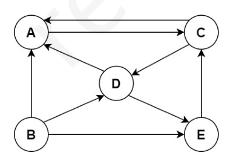
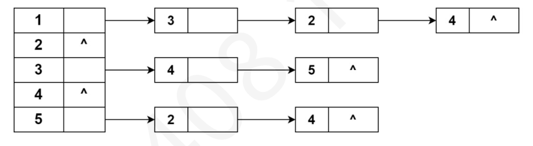
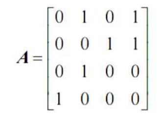
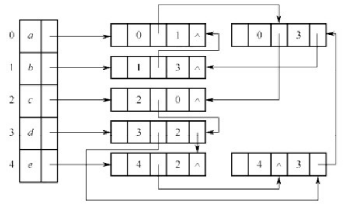
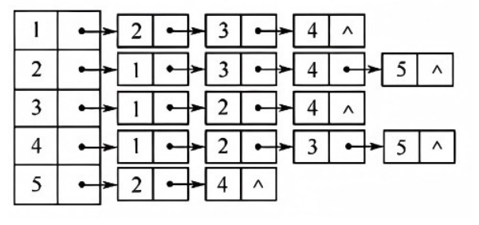
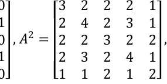
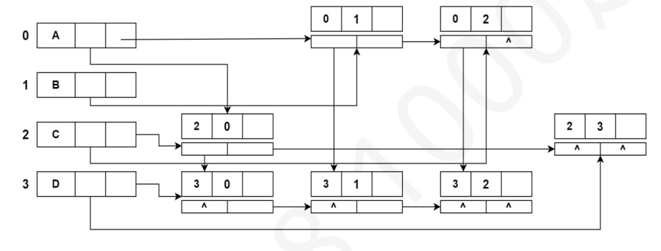

第 1 题
连通的无向图G 结点情况：16 个度为4 的顶点，2 个度为3 的顶点，5 个度为2 的顶点，4 个度为1 的结点。则G 的边数有（ ）条。
A． 84 B． 42 C． 27 D． 64 答案与解析 答案：B
边数* 2 =度数总和。答案为(16*4+2*3+5*2+4*1)/2=42。
教材第 29 页 第 2 题
设有无向图G=(V，E)和G'=(V'，E')，若G'是G 的生成树，则下面说法不正确的是（ ）
A． G'为G 的连通分量 B． G'是G 的无环子图 C． G'为G 的子图 D． G'为G 的极小连通子图且V'=V 答案与解析 答案：A
选项B、D 均为生成树的特点，而选项A 为概念错误：生成树G'为最小连通子图而非连通分量（最大连通子图），本题答案为A。
教材第 29 页 第 3 题
已按勘误修正
下列关于有向图强连通分量特性的叙述中，正确的是（ ）。
A． 若有向图G 有两个不同的强连通分量c 和c' ，设顶点𝑢, 𝑣∈𝑐，顶点𝑢' , 𝑣' ∈𝑐' ，若存在一条从u 到u' 的路径𝑢→𝑢' ，则可能存在一条从v' 到v 的路径𝑣' →𝑣 B． 若在图G 中加入一条新边，若该边的两个顶点都处于同一个强连通分量，则可能会增加G 的强连通分量的个数 C． 若在图G 中加入一条新边，若该边的两个顶点A 和A'分别处于不同的强连通分量，并且A 和A'之间原先没有路径，则添加后可能会增加G 的强连通分量的个数 D． 若在图G 中加入一条新边，若该边的两个顶点A 和A' 分别处于不同的强连通分量，并且A 和A'之间原先有一条路径，则添加后可能会减少G 的强连通分量的个数 答案与解析 答案：D
A 错误。根据强连通分量的定义，u与v之间互相存在路径，u'与v'之间互相存在路径。若图G存在一条从点v'到点v的路径v'\ to v，则G 也将包含路径(u \ to u' \ to v')和。如此就会有u和v'相互可以到达，从而与c和c'是不同的强连通分量的假设矛盾。B错误。若在图G中加入一条新边，若该边的两个顶点都处于同一个连通分量，则不会生成G的新的一个连通分量。C 错误。理由见D。D 正确。若在图G中加入一条新边，若该边的两个顶点A和A' 分别处于不同的连通分量，并且A和A'之间原先有一条路径，假设该路径简化后表示成A->mids- >A'(同理也可假设A-mids->A)，若添加一条边生成路径A'->A，形成一个环路，就会生成A和A'间的新的一个强连通分量，就会使得G的连通分量的个数加1。
勘误：题目中“连通分量”已按勘误为“强连通分量”，已核对。
教材第 29 页 第 4 题
一个有n 个顶点和n 条边的无向图一定是（ ）。
A． 连通的 B． 不连通的 C． 无环的 D． 有环的 答案与解析 答案：D
若一个无向图有n 个顶点和n-1 条边，可以使它连通但没有环(即生成树)，但若再加一条边，在不考虑重边的情形下，则必然会构成环。
教材第 29 页 第 5 题
下列关于有向图强连通分量特性的叙述中，<u,v>表示顶点u 到顶点v 的有向弧，下列说法正确的是（）。
A． 若有向图G 有两个不同的强连通分量c 和c' ，设顶点𝑢∈𝑐，顶点𝑢' ∈𝑐' ，那么不可能存在弧 <u,u’> B． 若有向图G 有强连通分量c，𝑢, 𝑣∈𝑐，若删除弧<u,v>，有向图G 的强连通分量一定增加。 C． 若有向图G 有两个不同的强连通分量c 和c' ，设顶点𝑢，𝑣∈𝑐，顶点𝑢' ，𝑣' ∈𝑐' ，若存在u→u'的路径，那么一定不存在<v',v> D． 若有向图G 有两个不同的强连通分量c 和c' ，设顶点𝑢∈𝑐，顶点𝑢' ∈𝑐' ，若不存在<u,u'>，那么添加<u',u>后，该图的强连通分量一定不变 答案与解析 答案：C
A 错误。强连通分量内的任意两个元素都存在到彼此的路径。不同强连通分量的顶点可以只有单向的边。如下图。 B 错误。u→v 的直接边被删除，但是可能仍然存在u→v 的路径，比如下图，1→3 被删除后，仍然是一个强连通分量（环）。 C 正确。如果存在u→u'的路径，那么强连通分量c 的任意顶点可以通过u→u'的路径到达强连通分量c'的任意顶点。如果存在<v', v>，同理c'任意节点可以通过<v', v>到达c 中的任意节点，他们就是同一个强连通分量了，与题意不符。 D 错误。添加后，强连通分量可能合并，导致减少。
教材第 29 页 第 6 题
一个有28 条边的非连通无向图至少有（ ）个顶点。
A． 7 B． 8 C． 9 D． 10 答案与解析 答案：C
考查至少有多少个顶点的情形，我们考虑该非连通图最极端的情况，即它由一个完全图加一个独立的顶点构成，此时若再加一条边，则必然使图变成连通图。在28=n(n-1)/2= 8x7/2 条边的完全无向图中，总共有8 个顶点，再加上1 个不连通的顶点，共9 个顶点。 2 = 30，所以31 条弧的强连通有向图至少
教材第 30 页 第 7 题
有31 条弧的强连通有向图至少有（ ）个顶点
A． 6 B． 7 C． 8 D． 9 答案与解析 答案：B
6 个顶点的完全有向图边数是2𝐶6 有7 个顶点。
教材第 30 页 第 8 题
有向图的结点数为4，则至少需要多少（ ）条边满足在任意条件下这个图是强连通图。
A． 7 B． 8 C． 9 D． 10 答案与解析 答案：D
这题是根据真题改编，真题是无向图，要满足任意情况下所有结点都是联2通的，那么n 个结点中n-1 个结点尽可能的多浪费边，即n-1 个结点构成完全无向图，边数为𝐶𝑛−1 ，最2后一个结点再用一条边连接，这样能保证任意情况下都能连通，公式是1 + 𝐶𝑛−1。而这道题，要保证任意性，同样n-1 个结点要保证多浪费尽可能多的边数，也就是完全有向图，这2 。最后一个顶点向n-1 个顶点各发出一条出边，这样保证了n-1 个结点是强连通的，时候边数是2𝐶𝑛−1 而最后一个顶点不连通，此时任加一条边，都会构成强连通图。经以上分析，可以得到公式：𝑛+ 2 ，n=4 时答案时10，即选D。 2𝐶𝑛−1
教材第 30 页 第 9 题
如果G 的强连通分量的数量等于k>1，结点总数是n，那么边数m 应该满足（ ）
A． 𝑚>= 𝑛−1 B． 𝑚>= 𝑛−𝑘−1 C． 𝑚<= (n −1)(n −2) D． 𝑚<=𝑛−12 答案与解析 答案：D
k > 1，说明整个图不连通，不连通的情况下最大边数是𝑛−12 ，解析见上题。A、B 反例：如果k=n，也就是每个节点都是一个强连通分量，那么边数m=0，所以m 最小值是n- k。注意：如果k<n，那么B 是正确的，因为k 个强连通分量，那么让k-1个结点为单结点强连通分量，剩余n-k+1 个结点为剩余的一个强连通分量，n-k+1 个结点至少有n-k+1 条边。
教材第 30 页 第 10 题
具有51 个顶点和21 条边的无向图的连通分量最多为（ ）。
A． 33 B． 34 C． 45 D． 32 答案与解析 答案：C
初始考虑只有51个顶点的无向图G，此时G 中每个顶点都是连通分量，问题转化为向G 中添加21 条边，如何添加这21条边使得连通分量数目最多。若向两个不同的连通分量之间添加边，则连通分量数目会减1，所以应尽可能地将这21 条边加入同一个连通分量且让其接近完全图，含有7 个顶点的完全图有21 条边，所以用7 个顶点构成一个含有21 条边的连通分量，剩下51-7=44个顶点对应44个连通分量，共有45个连通分量。
教材第 30 页 第 11 题
下列关于图的陈述说法错误的是（ ）。
A． 强连通的有向图的任何顶点到其他所有顶点都有弧 B． 有向完全图一定是强连通有向图 C． DFS 生成树的高度一般不小于BFS 生成树的高度 D． 当各边上的权值相同时，BFS 算法可用来解决单源最短路径问题 答案与解析 答案：A
A 错误，强连通的有向图的任何顶点到其他顶点都有路径，而非弧。
教材第 30 页 第 12 题
若具有n 个顶点的图是一个环，则它有（ ）棵不同的生成树。
A． 𝑛2 B． n C． n-1 D． 1 答案与解析 答案：B
n 个顶点的生成树是具有n-1 条边的极小连通子图，因为n 个顶点构成的环共有n 条边，去掉任意一条边就是一棵生成树，所以共有n 种情况，所以可以有n 棵不同的生成树。
教材第 30 页 第 13 题
若一个具有n 个顶点、e 条边的无向图是一个森林，则该森林中必有（ ）棵树。
A． n B． e C． n-e D． 1 答案与解析 答案：C
在树中出了根节点（没有父亲结点），其他每个结点对应一条边，所以多出的来边即根节点的个数，根节点的个数即树的棵树，一共n-e 棵，答案选C。
教材第 30 页 第 14 题
考虑一个有向图G，假设该图中没有自环。以下关于有向图G 的描述，错误的是（ ）。
A． 如果G 的强连通分量的数量等于k<n，结点总数是n，那么边数m≥n B． 如果G 是一个有向树，那么m=n-1 C． 如果G 是一个强连通图，那么m≥n D． 如果G 是一个有向完全图，那么m=n(n-1) 答案与解析 答案：A
选项A 错误。当且仅当有向图中每个强连通分量顶点数都大于1 个，才满足m≥n。反例：只要取一个连通分量顶点只有一个，就不满足结论。
教材第 30 页 第 15 题
在如下图所示的有向图中，共有（ ）个强连通分量。

A． 1 B． 2 C． 3 D． 4 答案与解析 答案：B
强连通分量是极大强连通子图，任意两个顶点之间有方向相反的两条路径。由定义不难得出，若一个顶点只有出边或入边，则该顶点必定单独构成一个连通分量。图中，顶点B 只有出边，其他所有顶点都不可能有到顶点B 的路径，所以顶点B 单独构成一个强连通分量。在顶点A、C、D、E 中，任意两个顶点之间都有方向相反的两条路径，所以可构成一个强连通分量。
教材第 30 页 第 16 题
下列关于图的叙述，正确的是（ ） I．任意无向图的生成森林中顶点数量=边数+1II．在一个连通无向图中，顶点数为n，边数为m，则它的生成树的边数为n-1III．对于有向无环图，可以通过拓扑排序来判断两个顶点之间是否有路径IV．在一个无向图中，若从任意一个顶点出发都可以到达其他所有顶点，则这个图是连通图
A． 仅II，IV B． 仅I、III C． 仅I、II、IV D． 仅II、III、IV 答案与解析 答案：A
I 错误，任意无向图的生成森林中顶点数量=边数+连通分量数II 正确.在一个连通无向图中，顶点数为n，边数为m，则它的生成树的边数为n-1。 III 错误.对于有向无环图，拓扑排序可以得到一个线性次序，但不能直接判断两个顶点之间是否有路径。 IV 正确，强连通的定义是从任意一个顶点出发，都可以到达其他所有顶点。对于无向图，连通性即意味着强连通性。
教材第 31 页 第 17 题
设G 是一个非连通无向图，有10 条边，则该图的顶点数至少有（ ）个。
A． 5 B． 6 C． 7 D． 8 答案与解析 答案：B
为了使顶点数最少，我们需要构成一个完全连通图和一个单独点的子图，所以设有10 条边的完全连通图的顶点数为n，则n(n-1)/2=10，可以求出n=5，即该图的顶点数至少有5+1=6个。
教材第 31 页 第 18 题
已按勘误修正
下列关于图的说法正确的是（ ）
A． 无向连通图的极小连通子图就是它本身 B． 对无向图做dfs 时，dfs 的调用次数与其连通分量的数量无关 C． 一棵非空二叉树可以看作一个无向连通图 D． 邻接矩阵为上三角矩阵的图一定存在唯一的拓扑排序 答案与解析 答案：C
A错误，无向连通图的极大连通子图就是它本身；B 错误，对无向图做dfs时，dfs的调用次数等于连通分量的数量；D 错误，比如{1，2}、{1，3}，拓扑序列为132 或者123，并不唯一。
勘误修正： 解析勘误：B 选项解析中“对有向图做 DFS”应为“对无向图做 DFS”。
勘误：勘误：B 选项中“有向图”应为“无向图”（电子版已修正，已核对）。
勘误：解析勘误：B 选项解析中“对有向图做 DFS”应为“对无向图做 DFS”。
教材第 31 页 第 19 题
已知一个有向图的邻接表存储结构如右图所示，根据有向图的深度优先遍历算法，从顶点1 出发，所得到的顶点序列是（）

A． 1，2，3，5，4 B． 1，2，3，4，5 C． 1，3，4，5，2 D． 1，4，3，5，2 答案与解析 答案：C
本题考查深度优先遍历。深度优先遍历是找到新的访问结点后，就从新结点开始找新的访问结点，如果没有找到，那么回溯到上一个找到的新的访问结点继续查找。从顶点1 出发，下一个新访问结点3，从3 开始，找到4，从4 开始，没有新结点，回溯到3，找到新访问结点5，从5 开始，找到2，从2 开始没有新结点，回溯到5，没有新结点，回溯到3，没有新节结，回溯到1，没有新结点，访问结束。所以得到的顶点序列为1, 3, 4, 5, 2。注：当一个图只给了相应的图形时，那么它采用哪种遍历方式，遍历序列一般都是不唯一的，但是在给定了存储结构(邻接矩阵或邻接表等)时，一般相应的遍历序列都是唯一的。
教材第 31 页 第 20 题
关于有向图的描述，正确的是（ ）
A． 从邻接矩阵中删除一个顶点的时间复杂度是O(1) B． 有向图的入度和出度之和等于边数的两倍 C． 有向图中的强连通分量不可能包含多个非连通子图 D． 在有向无环图中，可以通过拓扑排序得到唯一的线性序列 答案与解析 答案：B
从邻接矩阵中删除一个顶点，需要删除对应的行和列，时间复杂度为O(N)，其中N 是顶点的个数，因此A 选项错误。 B 正确，有向图中的边有一个起点和一个终点，因此每条边会使起点的出度加1 和终点的入度加1，所以入度和出度之和等于边数的两倍。 C 错误，子图的概念是顶点属于原图的顶点子集，边也是原图的子集，且所有边子集中的边对应的两端顶点也属于子图。强连通分量内的子图可能是不连通的。 D 错误，拓扑排序的结果可能并不唯一。具体来说，当有向无环图中存在多个入度为0 的顶点时，可以从这些顶点中任选一个进行排序，这导致拓扑排序的结果有多种可能。
教材第 31 页 第 21 题
设图的邻接矩阵A 如下所示，各顶点的入度依次是（ ）。

A． 1,2,1,2 B． 2,2,1,1 C． 3,4,2,3 D． 1,2,3,4 答案与解析 答案：A
计算顶点i 的入度，要遍历第i 列非0 元素个数。由邻接矩阵可以知道，各顶点入度依次是1, 2, 1, 2。
教材第 31 页 第 22 题
若无向图G=(V,E)的邻接多重表如下图所示，则不属于该图的广度优先遍历序列的是（ ）。

A． abdce B． decab C． bacde D． ecdab 答案与解析 答案：C
该邻接多重表表示的无向图如下图所示，可知C 选项的序列是深度优先遍历。
教材第 32 页 第 23 题
一个含有n 个顶点的连通且无环的简单无向图，在其邻接矩阵存储结构中共有（ ）个零元素
A． 𝑛2 −2𝑛 B． 𝑛2 −2𝑛−2 C． 𝑛2 −2𝑛+ 2 D． 2𝑛−1 答案与解析 答案：C
n 个点连通且无环的简单无向图为连通图，连通则至少有n-1 条边，无环则只有n-1 条边。 n 个点连通且无环的简单无向图有n-1 条边，非零个数为2(n-1)，零元素个数为n^2-2(n-1)。得出零元素个数为n²-2n+2。
教材第 32 页 第 24 题
带权有向图G 用邻接矩阵A 存储，则顶点i 的入度等于A（ ）
A． 第i 行非∞的元素之和 B． 第i 列非∞的元素之和 C． 第i 行非∞且非0 的元素个数 D． 第i 列非∞且非0 的元素个数 答案与解析 答案：D
带权有向图的邻接矩阵中，元素0 和∞表示的都不是有向边，而入度是由邻接矩阵的列中元素个数计算出来的。本题答案为D。（请回顾拓扑排序算法实现过程）
教材第 32 页 第 25 题
下列关于邻接表和邻接矩阵的陈述中，错误的是（ ）。
A． 求有向图的结点的入度必须遍历整个邻接表 B． 在有向图的邻接表中，某个顶点v 在链表中出现的次数等于该顶点的入度 C． 若邻接矩阵中的主对角线以下的元素为0，则该图必定存在一个拓扑排序序列 D． 因为有向无环图具有拓扑序列，所以它的邻接矩阵必定是上三角矩阵或下三角矩阵 答案与解析 答案：D
D 错误。下三角矩阵说明编号大的顶点是弧尾，编号小的顶点是弧头，不会出现编号小的顶点指向编号大的顶点的情形，此时说明该有向图拥有拓扑排序，但拥有拓扑排序序列的有向图的邻接矩阵不一定是三角矩阵，有向无环图具有拓扑排序序列，其邻接矩阵没有明显的特征。
教材第 32 页 第 26 题
下面关于图的存储的叙述中正确的是（ ）
A． 用邻接表法存储图，占用的存储空间大小只与图中边数有关，而与结点个数无关 B． 用邻接表法存储图，占用的存储空间大小与图中边数和结点个数都有关 C． 用邻接矩阵法存储图，占用的存储空间大小与图中结点个数和边数都有关 D． 用邻接矩阵法存储图，占用的存储空间大小只与图中边数有关，而与结点个数无关 答案与解析 答案：B
邻接矩阵只跟图的顶点有关，邻接表既和顶点有关也和边有关。
教材第 32 页 第 27 题
下列说法错误的是（ ）
A． 对任意一个图，从它的某个顶点出发，进行一次深度优先或广度优先搜索，即可访问图的每个顶点。 B． 连通图上各边权值均不相同，则该图的最小生成树是惟一的 C． 有n 个顶点的无向图，采用邻接矩阵表示，图中的边数等于邻接矩阵中非零元素之和的一半 D． 树的先根遍历算法可以理解为深度优先遍历法的一种特殊形式 答案与解析 答案：A
对于连通图而言，从它的某个顶点出发，进行一次深度优先或广度优先搜索，即可访问图的每个顶点；对于非连通图而言，从某个顶点出发，进行一次深度优先或广度优先搜索，只能访问连通分量内的每个顶点，若要访问图的所有顶点，还需从余下的连通分量中选择一顶点出发进行遍历。
教材第 32 页 第 28 题
下列说法错误的是（ ）
A． 强连通图不能进行拓扑排序 B． 只要无向网中没有权值相同的边，其最小生成树就是唯一的。 C． 如果表示某个图的邻接矩阵是对称矩阵，则该图不一定是无向图。 D． 从n 个顶点的连通图中选取n-1 条权值最小的边，即可构成最小生成树 答案与解析 答案：D
要求生成树中不能有回路。
教材第 32 页 第 29 题
如下无向图的邻接表，从顶点2 到顶点4 长度为2 的路径数量为（ ）

A． 1 B． 2 C． 3 D． 4 答案与解析 答案：C
先转换为邻接矩阵A，A²[2][4]即所求答案。 𝐴=

教材第 33 页 第 30 题
下图所示十字链表表示的有向图，入度为2 的顶点有（ ）个

A． 1 B． 2 C． 3 D． 4 答案与解析 答案：C
表示的有向图如下图所示，入度为2 的顶点有A，B，C 三个。也可不同画出原图。只需要从顶点表每个橙色格子出发，一直沿着橙色格子继续遍历到橙色格子为^的边表结点为止，图中经过的结点数量为2 即为入度为2，即A、B、C 三个顶点。
教材第 33 页